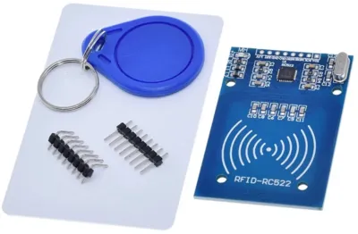
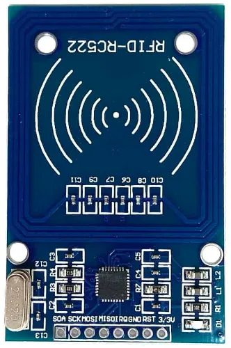
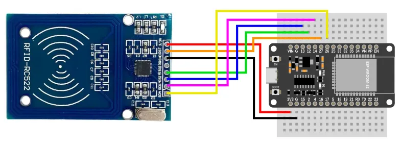
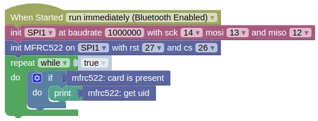

RFID Reader (MFRC522)

The MFRC522 is a cheap and popular RFID reader. You can find it for less than $2, and it comes with a card tag and a key fob tag.
This extension allows you to read the tag ID (Blocks and Python), as well as read / write data to the tag (Python only).
Pins

| Pin | Description |
|---|---|
| 3.3V | Power for the sensor. Connect to 3V3. |
| RST | Reset pin. You need to connect this to an output capable pin on the ESP32 (default pin 27). |
| GND | Ground pin. This should be connected to the GND pin on the ESP32. |
| IRQ | Interrupt pin. This is used to notify the microcontroller that a card is present. It's not supported by this extension. |
| MISO | Master-In-Slave-Out. This is used to communicate with the ESP32 using the SPI protocol (default pin 12). |
| MOSI | Master-Out-Slave-In. This is used to communicate with the ESP32 using the SPI protocol (default pin 13). |
| SCK | Serial Clock. This is used to communicate with the ESP32 using the SPI protocol (default pin 14). |
| SDA | This is the CS (Chip Select) pin. You need to connect this to an output capable pin on the ESP32 (default pin 26). |
Wiring

Code
This code will check if a tag is present, if it is, it'll retrieve and print out its ID.
Blocks

Python
import machine
import mfrc522
spi1 = machine.SPI(1, baudrate=1000000, sck=Pin(14), mosi=Pin(13), miso=Pin(12))
mfrc522_device = mfrc522.MFRC522(spi1, 27, 26)
while True:
if mfrc522_device.card_present():
print(mfrc522_device.get_uid())
Results
Bring an RFID tag close to the MFRC522. You should see a hexidecimal string printed in the monitor
class MFRC522 - control MFRC522 RFID reader
Constructors
mfrc522.MFRC522(spi, rst, cs)
Creates an MFRC522 object.
The arguments are:
-
spiAn SPI object. -
rstAn integer specifying the microcontroller pin connected to RST. -
csAn integer specifying the microcontroller pin connected to CS (often labelled as SDA on the board).
Returns a MFRC522 object.
Methods
Only a few methods are documented here. More methods are available, but you'll need to read the source code.
MFRC522.card_present()
Check if a card is detected by the reader.
Returns True if a card is detected, else False.
MFRC522.get_uid()
Gets the UID on the tag. The UID is 4 bytes (32 bits). When printed in hexidecimal, it will use 2 characters per byte, so the returned string will have 8 characters.
Returns a string representing the tag's UID in hexidecimal.